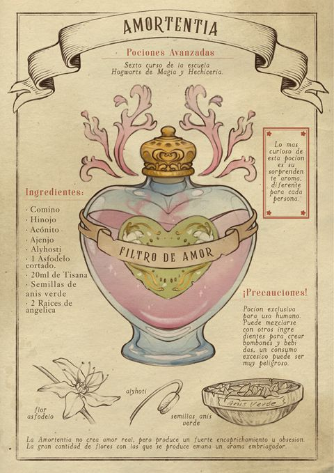

Poção do Amor
Nome: Amortência
Considerada a mais poderosa poção de amor existente, provoca uma intensa paixão e obsessão por quem a preparou.
Seu aroma é diferente para cada pessoa, revelando aquilo que mais desperta seus desejos. Apesar de poderosa, não é capaz de criar amor verdadeiro.